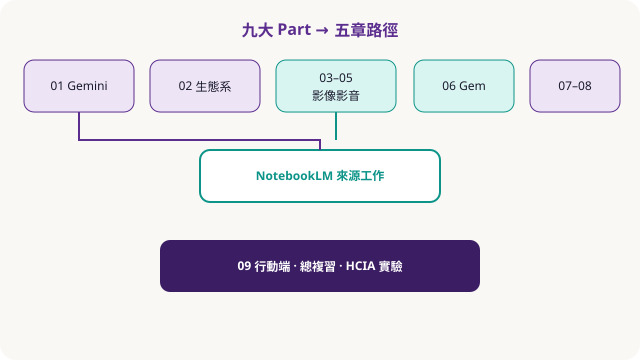

導讀 · 學習地圖
先畫地圖，再動手開工具
這門配套課把九大 Part 收成五章＋結語：前半建立 Gemini 與 Workspace 工作流，中段進入影像／影音，後半用 NotebookLM 做「有來源」的知識工作，並用行動端場景收斂。
書本結構（消化版）
- Part 01 Gemini 基礎與提示、研究
- Part 02 Workspace：郵件／文件／表／簡報／Meet
- Part 03–05 影像（Nano Banana）與影音（Veo／Flow）
- Part 06 Canvas、Gem、自訂助理
- Part 07–08 NotebookLM 筆記與產出
- Part 09 手機與行動場景

課堂節奏建議
- 暖身 10 分：確認 Google 帳號權限與學校／企業政策（資料可否上傳）。
- 示範 20 分：老師走一遍「同一任務、三種工具」對照（例如：寫企劃用 Gemini vs 文件側欄 vs NotebookLM）。
- 學員操作 25 分：照章節 checklist 完成最小可行產出。
- 複習測驗 10 分：本站小測＋口頭互評「有沒有查核來源」。
安全與邊界（務必先講）
幻覺與查核：模型可能生成看似合理但不正確的內容；重要決策必須交叉驗證。
隱私：勿上傳未授權個資、考題答案鑰、客戶機密。課堂請用練習素材。
偏見：訓練資料可能帶刻板印象；敏感主題要人工審閱。
隨堂測驗 · PQ1
本站章節與紙本書的正確關係是？
隨堂測驗 · PQ2
課堂上處理客戶名單時，較妥當的做法是？
隨堂測驗 · PQ3
「多模態」在 Gemini 脈絡下主要指？